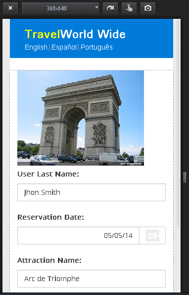
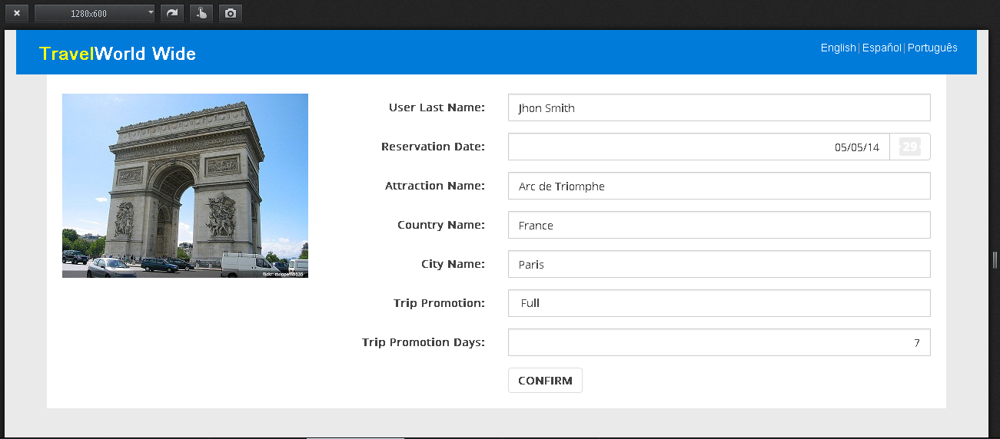
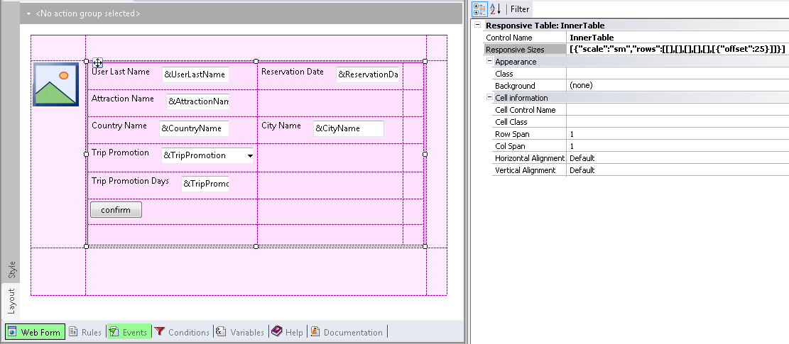
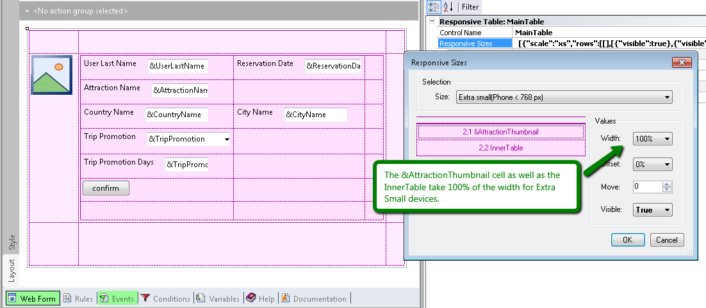
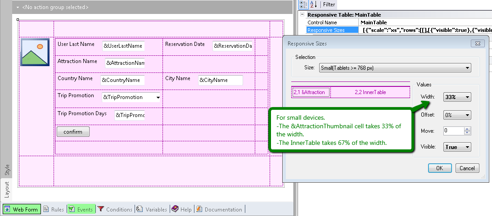
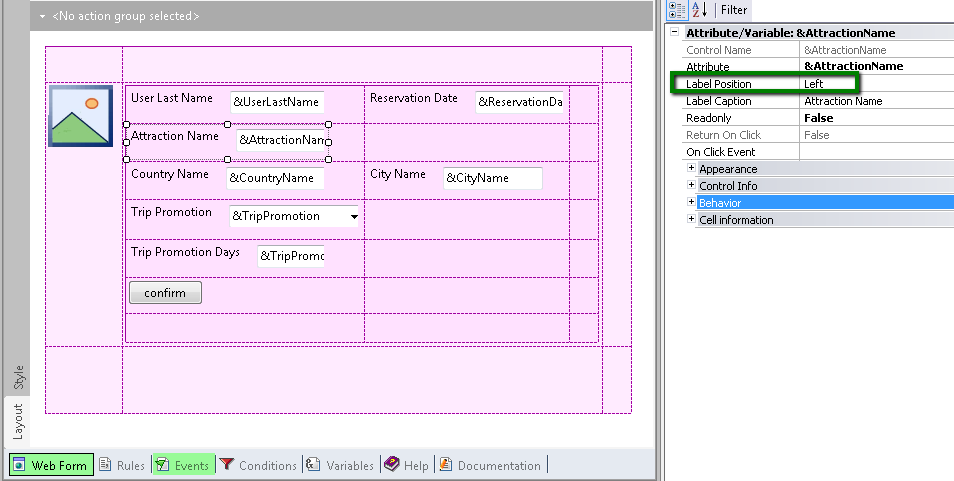
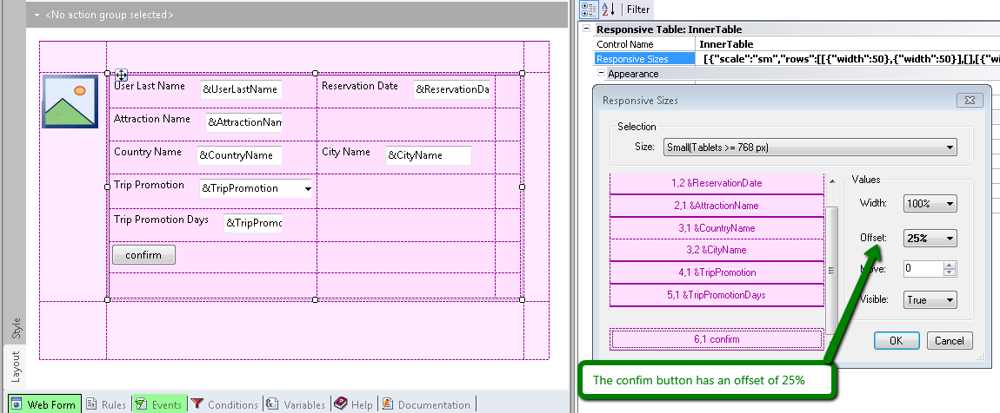

In a Responsive Web Application, the form’s elements are distributed in a different manner depending on the final screen size. The main purpose is to arrange the layout so that all information is presented in a readable format, across different screen sizes.
In this document we explain with an example, how to use the Web Abstract Editor - how to arrange the elements in the form - in order to make a RWD.
The idea is to design a web panel form for different devices, showing data about an air ticket reservation, and a button to confirm the booking.
The following images show what the final screen will look like, in a phone and in a desktop computer.


Note that, in general, for small screens like phone screens, the best way to show information is in only one column (stacked). For wide screens, like tablets or desktop screens, the information is better displayed horizontally. Also, in the case of tablets or desktop screens it is possible to show additional information.
To make a different design for each type of screen in GeneXus, we use the Web Abstract Editor.
In the example shown in this document, the Abstract layout is as follows:

Figure #2
Note that we used two responsive tables, one nested into the other. The "InnerTable" shows travel information and the confirmation button, while the table outside includes the InnerTable and the &AttractionThumbnail photo. This enables us to have the photo in a cell with a rowspan of n rows.
First, we design the outer table, so we click on the Responsive Sizes property (X Evolution 3) of the Responsive Table.
There, we have two cells for configuring their Width, Offset, Visible and Move properties, depending on the screen size.

Figure #3
The &AttractionThumbnail cell as well as the InnerTable take up 100% of the width for extra small devices ( <768px ). This means that they appear one on top of the other.

Figure #4
In the case of Small Devices (>= 768px), the &AttractionThumbnail width is set to 33%, and the InnerTable width is set to 67%. See Figure #1.
Note that the width is represented in a combo box of percentages. The values available to select from are the ones matching the distribution of columns of the Bootstrap Grid. That is, the percentages are the ones that may be converted into twelfths. The aggregate sum of the cells’ width in a row must be 100% or less. Otherwise, the cells which do not enter in the row are dropped to the bottom.
In the example (see figure #2), note that even though in the abstract layout the &UserLastname is on the side of the &ReservationDate, at runtime, the position of the controls depend only on the width that was set for them. If the aggregate sum of their width is greater than 100%, then the controls are shown one on top of the other.
The &AttractionName, &CountryName, and &CityName controls, among others, were all dragged to the form using their automatic labels (the Label Position property is set to "left" value):

Figure #5
As a consequence, the width assigned to the label and to the input control in small screen devices is automatic. For labels, the width is 25% by default, and for the input it is 75% in small screen devices.
So, to vertically align the confirm button and the labels, we must configure an offset of 25% for the button:

Figure #6
In the case of phones - extra small screen devices - it is desirable that labels of edit controls be on top instead of on the side of the input.
As explained in this example, labels are automatic and are assigned by default the 25% of the cell width for small screens and wider screens (>=768px).
This means that for smaller screens (<768px), there are no settings specified for the label and the input, so they take up 100% of the row width.
In extra small screens they look as shown in figure #1, where the label is on top.
Note that the settings for a screen size apply to that screen size and to larger sizes, if there is no explicit setting for larger sizes. If no settings are specified for smaller screen sizes, then 100% is the default value. This is based on BootStrap behavior.
In this example, we could have used additional cells for the labels instead of automatic labels, in which case we could have determined the label width and the input width separately.
How to design a responsive web application: Hiding an element of the form
How to design a Responsive Web Application: Hiding a column in a grid
How to use the Abstract Editor: Hiding a cell in the Responsive Table
How to use the Abstract Editor: designing a Web Transaction Form
HowTo: Display a menu in a responsive application
How to change cell width in RWA
|